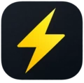
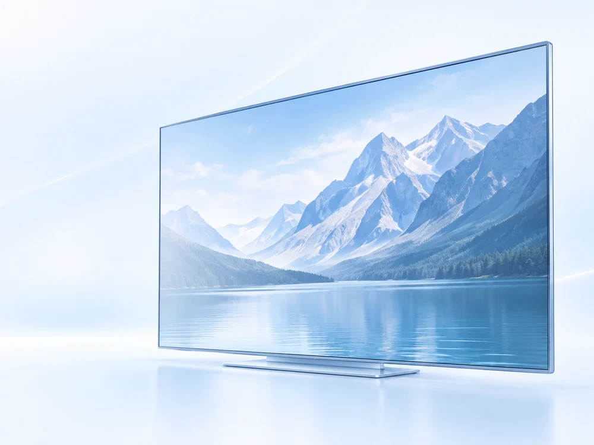

低延迟
优选低延迟线路
响应更快，日常访问更顺畅
支持 AI 工具
畅用 AI，高效工作
聊天、写作、编程一站兼顾
支持 4K 流媒体
YouTube、Netflix 高清影音
大带宽线路，让播放更流畅
优质线路 / 干净 IP
精选专线与住宅 IP 方案
多地区连接，品质网络之选
亲测 - 为您推荐好品质 VPN
5 家站长亲测 · 关注线路、出口 IP 与高峰体验
ipequal
CN2 GIA 直连美国住宅宽带，独享 IP 是这家的核心亮点。
- CN2 GIA 精品线路，国内直连
- ISP 住宅出口，美国家庭宽带
- 无需链式代理，减少配置环节
- Clash / Shadowsocks 订阅接入
TAG
站长亲测推荐：看重多地区出口，AI 工作与高清影音一并兼顾。
- 多地区节点，匹配目标服务区域
- 出口 IP 选择，兼顾跨区访问需求
- AI + 流媒体，常用场景实用之选
- 国内 / 海外入口，按网络环境接入
SSRDOG
全程专线网络优化，官方客户端与第三方客户端双重选择。
- 全程专线，针对跨境网络优化
- 流媒体解锁，覆盖影音访问需求
- 官方客户端，统一管理连接
- 第三方客户端，沿用现有使用环境

闪电猫
站长亲测推荐：连接速度与日常稳定性，都是值得关注的亮点。
- 节点响应，重视交互与请求延迟
- 持续传输，兼顾视频加载与下载
- AI 工具访问，聊天、创作与编程
- 高峰连接体验，日常常用推荐
肥猫云
官方主打大带宽、不限速专线，重点看持续传输与专线体验。
- 专线网络，跨境连接核心配置
- 大带宽，面向持续数据传输
- 不限速方案，以官网套餐说明为准
- AI + 影音，兼顾工作娱乐访问
“亲测”指站长个人使用体验，不代表统一条件下的测速排名。技术配置参考商家公开说明，各家并非全部提供住宅或独享 IP；套餐、节点及支持范围以官网为准。推荐内容免费，VPN 服务付费。
畅用 AI 好工具，工作快人一步
聊天、写作、写代码，一条好线路都能兼顾。优质 IP 与稳定连接，让灵感少等待、工作更顺手。
 ChatGPT
ChatGPT Claude
Claude Cursor
Cursor Claude Code
Claude Code Gemini
Gemini

高清大片，流畅看个过瘾
YouTube、Netflix，看视频就要清晰又顺畅。
精选大带宽线路，为 4K 影音提供充足动力。
更流畅的全球
流媒体观看体验
2026 亲测选购指南
科学上网、机场与 VPN 推荐，重点看什么？
不少用户会搜索“机场推荐”“梯子推荐”“魔法上网”或“中国好用的 VPN”。这些叫法通常都指向跨境网络连接需求，真正影响体验的并不是名称，而是线路质量、出口 IP、目标地区、晚高峰稳定性与客户端支持。
本页整理 5 家站长亲测服务，覆盖 CN2 GIA、住宅 ISP、全程专线、大带宽以及多地区节点等不同方向。选择前先确认常用设备、AI 工具、4K 流媒体和目标地区，再从短周期套餐开始验证，更容易找到适合自己的稳定方案。
选择之前，了解这几件事
一点功课，让每一次选择更有把握。
第一次选择 VPN，应该关注什么？
先列出常用设备、目标地区和每月预算，再比较节点、流量额度、同时连接设备数与客户端支持。若服务提供试用或短周期套餐，先用自己的网络测试常用场景，再决定是否长期订阅。这里的“VPN”是网络服务的通俗称呼，具体连接协议与客户端请查看服务商说明。
低延迟、网速和“干净 IP”有什么区别？
延迟是请求往返所需时间，下载速度反映传输能力，两者并不等同。“干净 IP”也不是统一认证，通常涉及出口 IP 的使用历史、共享程度和目标平台的风控判断。测试时应注明所在地区、运营商、节点和时间，尤其关注晚高峰；本页没有提供实时测速或实测排名。
可以使用 ChatGPT、Claude 等 AI 工具吗？
可用性同时取决于平台支持地区、账号状态、出口 IP 和网络线路。请在购买前向服务商确认你实际使用的工具与地区，并在平台允许的地区、按照其服务条款使用。页面展示工具名称用于说明使用需求，不代表工具品牌对任何服务商的推荐或可用性保证。
看 4K 视频，应该怎么选套餐？
关注持续带宽、月流量额度和目标平台，而不只看单次延迟。高画质视频会消耗更多流量，晚高峰表现也可能不同。Netflix 等平台的内容地区、订阅权益与网络可用性是不同因素，建议先测试你想观看的具体内容。
关于本站与推广链接
站长亲自使用过本页推荐的五家服务。“亲测”代表站长个人使用体验；本站未发布统一测试条件下的量化测速或排名，不能推断所有地区、所有节点都有相同表现。技术配置与套餐信息参考商家公开说明。点击“访问官网”会通过本站短链接跳转至相应服务商的推荐页面；如果你完成符合商家规则的注册或购买，本站可能获得推广佣金。价格、优惠、售后与服务内容以商家页面为准。
本站不提供 VPN 服务，不收集注册或付款信息，也没有设置第三方访问统计。服务商网站按其自身隐私政策处理数据。品牌名称与标识用于识别相关产品。